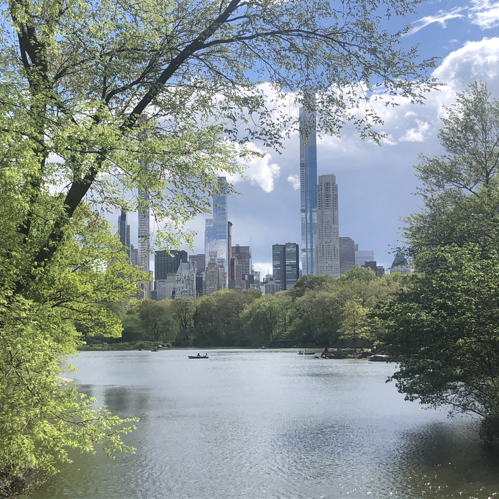
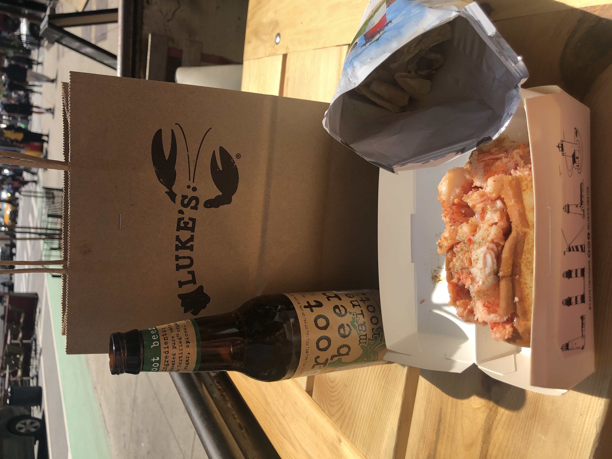
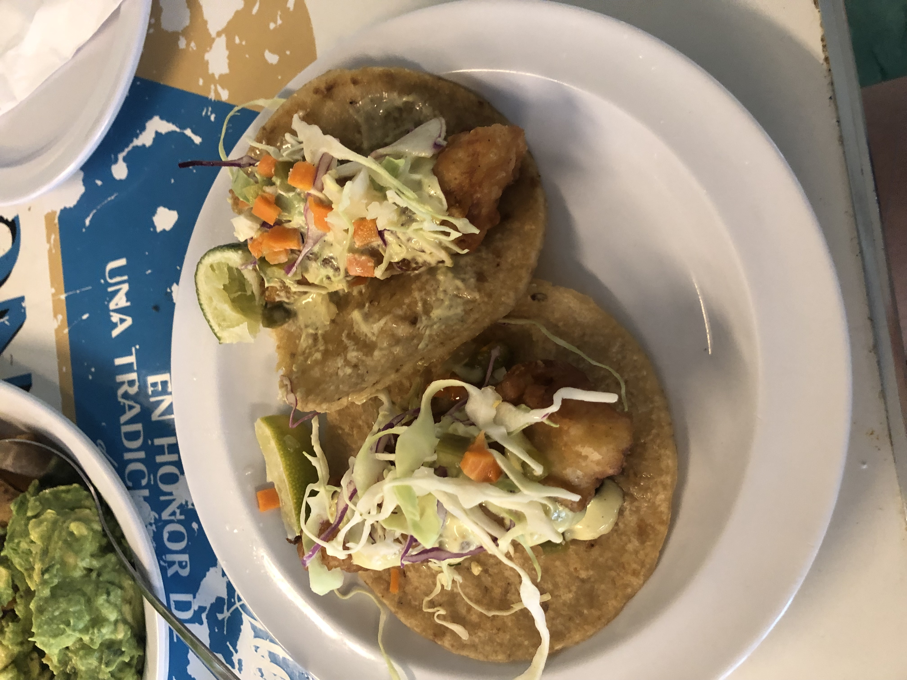
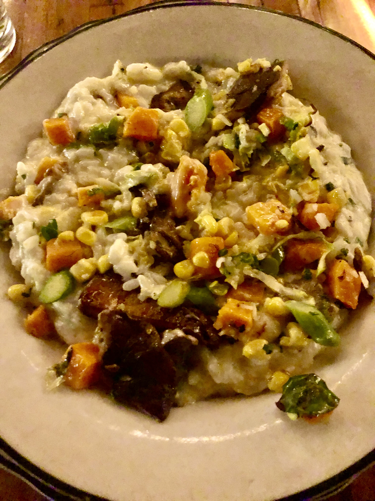
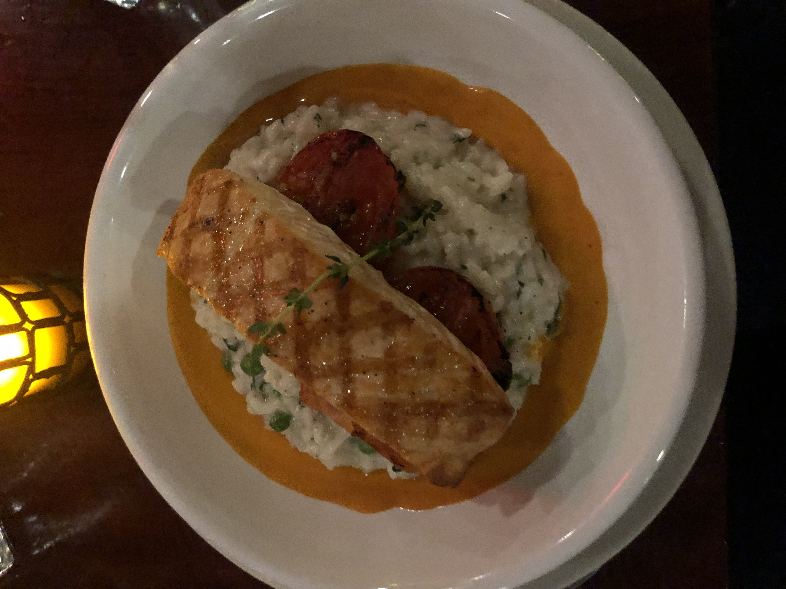

I live in NYC on the Upper West Side. I love living here because there’s always something fun to do, usually right in the neighborhood. It’s great that everything is just a short walk from home. Central Park is nearby which is the perfect place to enjoy nature. I’m a foodie, so I love exploring various restaurants with friends. Some of my favorites include The Ribbon,Luke's Lobster, Tacombi and Freds. On the weekends I always visit the local farm market to getfresh fruits and veggies for the week and stop by Shakespeare & Co., the local bookstore and café, for my favorite tea and to just peruse.



